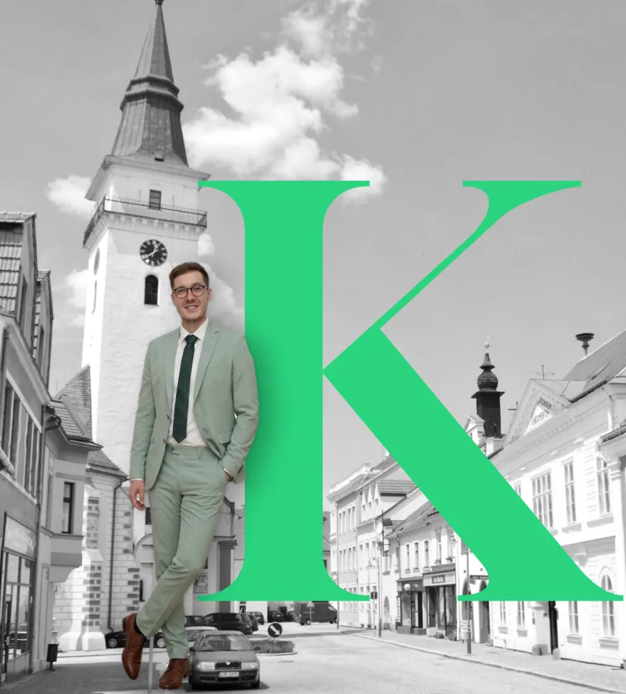

Jemnice a okolí
Srovnám, co máte, s tím, co dnes nabízí trh. A řeknu vám to na rovinu — i když vyjde, že nic neměnit.
Chci druhý názorJméno a telefon. Zavolám osobně do 24 hodin.

Znáte to?
A tak to zůstává, jak to je. Nejdražší není špatné rozhodnutí — nejdražší je žádné. To se totiž platí každý měsíc.
„Sjednali mi to na pobočce, ten člověk už tam nepracuje — a já nevím, na koho se obrátit.“
To slyším nejčastěji. Začínal jsem v bance a vím, že pobočka doporučuje podle svého plánu, ne podle vás. Se mnou máte jedno číslo a papíry beru na sebe.
Provizi dostávám od instituce, ne od vás. Když je nejlepší nechat všechno být, řeknu vám to a o provizi přijdu.
Zavolám vám do 24 hodin. Osobně já, ne call centrum. Deset minut.
Sejdeme se na 30 minut. V Jemnici, u vás nebo online.
Co máte vedle toho, co nabízí trh. Na místě se nic nepodepisuje.
Když po telefonátu bude jasné, že vám nemám co nabídnout, řeknu vám to rovnou a víc se neozvu.
30 klientů z Jemnice, Dačic, Moravských Budějovic a šesti dalších obcí v okolí. Doslova, se souhlasem se zveřejněním.
Budete mezi ně patřit taky?
Chci druhý názorStačí jméno a telefon.
Raději hned? Zavolejte mi: 733 651 217
Mám to, děkuji.
Ozvu se vám osobně nejpozději do 24 hodin.